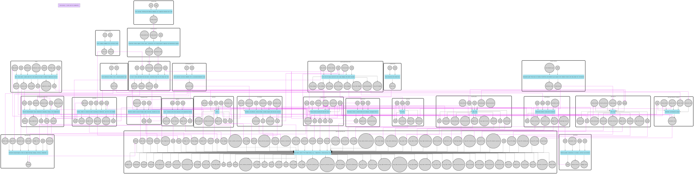

August 21, 2026
From Breathing to Bleeding
Welcome to another episode of human body simulation.
It has been a while. In the previous post our artificial human had a heartbeat and could breathe, and I promised gas exchange next. Gas exchange happened. Then a lot of other things happened, and I kept postponing the post because there was always one more organ to add.
So here is a progress report. No code this time, just what the body can do now. And the body has a name now, by the way. Meet Leon.
Air gets into the blood
The breathing post ended with air moving in and out of the lungs and going nowhere. Now the oxygen actually crosses into the blood, and the blood carries it around. This is the moment the simulation stopped being a collection of organs and became a system, because the blood turned out to be the information bus of the whole body. Almost everything reads from it and almost everything writes to it.
Blood gases are reported the way a hospital would report them: SpO₂, PaO₂, PaCO₂, pH, oxygen content, hemoglobin. The numbers come from real equations (the alveolar gas equation, the oxyhemoglobin dissociation curve), not from tuning until the dashboard looked fine.
And here is the fact that surprised me the most in this whole period: breathing is not driven by oxygen. It is driven by carbon dioxide. The body mostly doesn't care how much oxygen you have; it cares how much CO₂ has accumulated. That's why holding your breath becomes unbearable long before you are in any real danger, and why low oxygen sneaks up on people at altitude or with carbon monoxide. Leon's chemoreflex works the same way: his breathing rate follows CO₂, and it took a few dead Leons to get that right.
Blood pressure, and the reflex that defends it
Leon has blood pressure now. The vasculature and the heart together produce cardiac output, stroke volume, resistance and mean arterial pressure, and on top of them sits the baroreflex, the control loop that keeps pressure within range. Lose blood and the heart speeds up and the vessels tighten, without anybody telling them to. It just falls out of the wiring, which is exactly the kind of emergent behavior I was hoping for when I started this.
Hormones
The body got an endocrine system: adrenal glands, a pancreas and a liver.
- Adrenaline and cortisol answer a stressor on two different clocks. Adrenaline is the fast one (seconds), cortisol is the slow one (tens of minutes). Scare Leon and you can watch the two curves peel apart.
- Insulin and glucagon argue over blood sugar. Feed Leon and insulin clears the meal; make him run and the liver releases stored sugar to keep the level up. Take the pancreas away and blood sugar has nobody defending it.
I genuinely did not expect how much of physiology is two hormones pulling in opposite directions. Once you see the pattern, it's everywhere.
Damage, and ways to die
In the heart post I wrote that to simulate life you first have to understand death. Back then death was a single threshold in the brain. Now every organ can be damaged, and damage is a plugin: attach it to an organ and the organ becomes injurable, with no per-organ code. Same for blood supply and hormone sensitivity. That was the best design decision of the whole period and it deserves its own post.
When a reservoir runs dangerously low (oxygen, blood, water, heat), the organs that depend on it are injured in a recognizable order, and if nothing intervenes, Leon dies. The test suite now contains a test that is literally called "ways to die". It checks that Leon dies of the right things, in the right order, on roughly the right timescales:
- suffocation in minutes
- exsanguination in minutes
- exposure to cold in tens of minutes
- carbon monoxide poisoning in the better part of an hour
- thirst in hours
- and a healthy body left alone does not die at all
Every one of those figures was wrong at least once. My favorite bug: for a long time, bleeding could not kill anybody. Injury was judged on oxygen tension in the blood, and a bleeding patient keeps that perfectly normal right up until they die of it. The blood that is left is fully oxygenated; there is just not enough of it. Carbon monoxide couldn't kill for the same reason. Fixing it meant injuring organs by what the blood actually delivers, not by what a single number reads.
The world around Leon
The environment stopped being a static sea-level atmosphere. The air has pressure, composition and things mixed into it, and the sun warms it during the day. You can move Leon to 5500 meters, put him on Everest, in a hyperbaric chamber, next to a wood fire or a leaking boiler, or just hand him a cigarette. Carbon monoxide takes the carrier (hemoglobin), not the oxygen tension, so the monitor says everything is fine while Leon is quietly poisoned. Raise the oxygen and he clears it faster. A hot day makes him sweat; a freezing one injures the brain before the kidney.
Feelings
This part is half physiology, half game design. Leon reports how he feels: hungry, thirsty, tired, exhausted, breathless, anxious, feverish, headache, needs the toilet, and on a good day, content. The feelings are derived from the body state, not set directly, so a hard workout makes him tired first and breathless soon after, because that's the order in which the numbers cross their thresholds.
The dashboard
In the heart post I said the UI would be entirely in the terminal. It is. The dashboard and the command prompt live in one program with the simulation: seven tabs on top (Overview, Cardiovascular, Respiratory, Nervous, Metabolic, Feelings, Body), a prompt at the bottom, and an ECG that finally looks like an ECG. You can split the lungs into left and right and watch them breathe slightly out of sync, because the left one is smaller.
Commands are the game part. activity:start 8 30m makes Leon work at eight times his resting rate for half an hour. trauma:bleed 1500ml opens a wound. intake:food 200kcal, emotion:stimulus 0.8 -0.5, air:preset everest, smoke:cigarette, temp:cold. You can schedule them (after 10m trauma:bleed 500ml), repeat them, and save sequences as named scenarios. And you can run the clock faster than real time when you don't want to wait forty minutes for the cortisol to come down.
Here is a short session: Leon at rest, then a hard workout, then a bleed, with the clock sped up so you can see the body compensate.
The mesh
For the FMesh folks: the body is now a mesh of 26 components (organs, distributed tissues like blood, skin and muscle, controllers, and physiology hubs) wrapped as a single component that lives inside the habitat mesh, which has three: time, air and sun. No component shares state with another. Everything is a signal.
Here is the human mesh, straight out of the graph exporter. It's an SVG, so click it and zoom in; it is big.

I'm quite happy with how readable it stayed. You can follow the air from the airway into the lungs, into the blood, and then see the blood fan out to everything. The dashboard doesn't know about any of this; it just subscribes to a catalog of telemetry, so a new metric appears on screen without touching UI code.
Keeping it honest
One thing I insisted on: the constants are derived, not tuned. There is a suite of reference tests that holds the model to numbers a physiologist can look up: the shape of the dissociation curve, resting blood gases, the haemorrhage classes, hormone half-lives, how pressure falls with altitude. When I change an organ and a reference test goes red, it is usually the organ that is wrong, not the textbook. Where the model cheats on purpose (death is faster than in life, because a scenario nobody can sit through teaches nobody anything) the code says so.
What's next
Honestly? I think I've played with Leon enough. The simulation did what I built it for: it pushed FMesh hard, it taught me more physiology than I expected to learn, and it showed that a pile of simple components wired together can produce behavior nobody programmed in. There is a long list of things it could still grow (an immune system, a ventilator, a barochamber), but I'm going to leave that list open and move on to other examples. I have a few ideas that have been waiting their turn.
It's all open source, so if you want to give Leon a spleen, a fever, or a proper night's sleep, the seams are there and pull requests are welcome. The code is in the fmesh-examples repo on GitHub. Clone it, run go run ., and be nice to Leon.
Make simulations, not war!